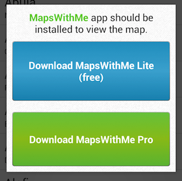

MapsWithMe Android API (hereinafter referred to as "API Library" or just "library") provides interface for client application to perform next tasks:
Thus, you can provide two way communication between your appication and MapsWithMe, using MapsWithMe to show points of interest (POI) and providing more information in your app.
Please refer to sample application for demo.
It is supposed that you are familiar with Android Development, and you have Android SDK and Eclipse (or another IDE of your choice) installed. You should be familiar with concept of Intents, library projects, and PendingIntents (recommended) as well. Your application must target at least android sdk version 7.
First step is to clone repository or download it as an archive.
When your are done you find two folders: lib and sample-app-capitals. First one is a library project that you should add to your project.
You don't need any additional permissions in your AndroidManifest.xml to use API library, so you can write real code straight away, calling for different MapsWithMeApi methods (more details below).
Core classes you will work with are:
showPointOnMap(Activity, double, double, String) etc.MWMResponse.extractFromIntent(Intent) to Intent. Contains MWMPoint data.The simplest usage:
public class MyPerfectActivity extends Activity {
...
void showSomethingOnTheMap(SomeDomainObject arg)
{
// Do some work, create lat, lon, and name for point
final double lat = ...;
final double lon = ...;
final String name = ...;
// Ask MapsWithMe to show the point
MapsWithMeApi.showPointOnMap(this, lat, lon, name);
}
...
}
For multiple points use MWMPoint class:
void showMultiplePoints(List<SomeDomainObject> list)
{
// Convert objects to MMWPoints
final MWMPoint[] points = new MWMPoint[list.length];
for (int i = 0; i < list.size; i++)
{
// Get lat, lon, and name from object and assign it to new MMWPoint
points[i] = new MWMPoint(lat, lon, name);
}
// Show all point on the map, you could also provide some title
MapsWithMeApi.showPointsOnMap(this, "Look at my points, my points are amazing!", points);
}
We support PendingIntent interaction (just like Android native NotificationManager does). You should specify ID for each point to diftiguish it leter, and PentingIntent that MapsWithMe will send back to your application when user press "More Info" button :
// Here is how to pass points with ID ant PendingIntent
void showMultiplePointsWithPendingIntent(List<SomeDomainObject> list, PendingIntent pendingIntent)
{
// Convert objects to MMWPoints
final MWMPoint[] points = new MWMPoint[list.length];
for (int i = 0; i < list.size; i++)
{
// ||
// ||
// \/
// Now you should specify string ID for each point
points[i] = new MWMPoint(lat, lon, name, id);
}
// Show all points on the map, you could also provide some title
MapsWithMeApi.showPointsOnMap(this, "This title says that user should choose some point", pendingIntent, points);
}
//Code below shows general way to extract response data
@Override
protected void onCreate(Bundle savedInstanceState) {
super.onCreate(savedInstanceState);
setContentView(R.layout.activity_main);
// Handle intent you specified with PandingIntent
// Now it has additional information (MWMPoint).
handleIntent(getIntent());
}
@Override
protected void onNewIntent(Intent intent)
{
super.onNewIntent(intent);
// if defined your activity as "SingleTop"- you should use onNewIntent callback
handleIntent(intent);
}
void handleIntent(Intent intent)
{
// Apply MWMResponse extraction method to intent
final MWMResponse mwmResponse = MWMResponse.extractFromIntent(this, intent);
// Here is your point that user selected
final MWMPoint point = mwmResponse.getPoint();
// Now, for instance you can do some work depending on point id
processUserInteraction(point.getId());
}
MapsWithMeApi.isMapsWithMeInstalled(Context) will return true if user has Lite or Pro version that supports API call installed.
Both Lite and Pro versions since 2.4.0 are support API calls.
MapsWithMeApi.showPoint() but MapsWithMe application is not installed?Nothing serious. API library will show simple dialog with gentle offer to download MapsWithMe. You can see how it looks like below. 
MapsWithMe Pro will serve your request in the case if both Lite and Pro versions installed.
If you have any questions please email to api@mapswith.me.
Copyright (c) 2013, MapsWithMe GmbH All rights reserved.
Redistribution and use in source and binary forms, with or without modification, are permitted provided that the following conditions are met:
THIS SOFTWARE IS PROVIDED BY THE COPYRIGHT HOLDERS AND CONTRIBUTORS "AS IS" AND ANY EXPRESS OR IMPLIED WARRANTIES, INCLUDING, BUT NOT LIMITED TO, THE IMPLIED WARRANTIES OF MERCHANTABILITY AND FITNESS FOR A PARTICULAR PURPOSE ARE DISCLAIMED. IN NO EVENT SHALL THE COPYRIGHT HOLDER OR CONTRIBUTORS BE LIABLE FOR ANY DIRECT, INDIRECT, INCIDENTAL, SPECIAL, EXEMPLARY, OR CONSEQUENTIAL DAMAGES (INCLUDING, BUT NOT LIMITED TO, PROCUREMENT OF SUBSTITUTE GOODS OR SERVICES; LOSS OF USE, DATA, OR PROFITS; OR BUSINESS INTERRUPTION) HOWEVER CAUSED AND ON ANY THEORY OF LIABILITY, WHETHER IN CONTRACT, STRICT LIABILITY, OR TORT (INCLUDING NEGLIGENCE OR OTHERWISE) ARISING IN ANY WAY OUT OF THE USE OF THIS SOFTWARE, EVEN IF ADVISED OF THE POSSIBILITY OF SUCH DAMAGE.